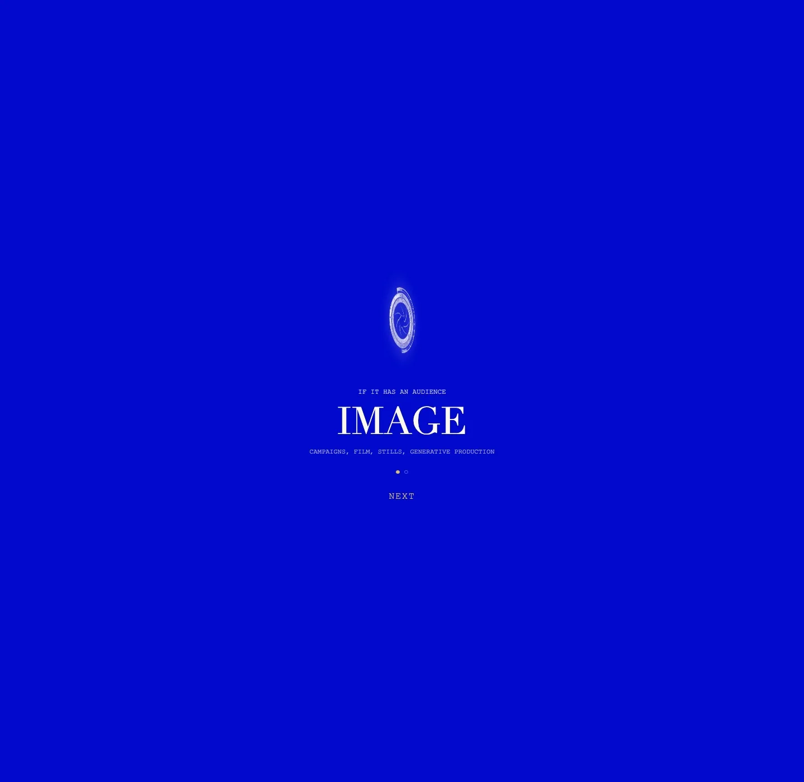
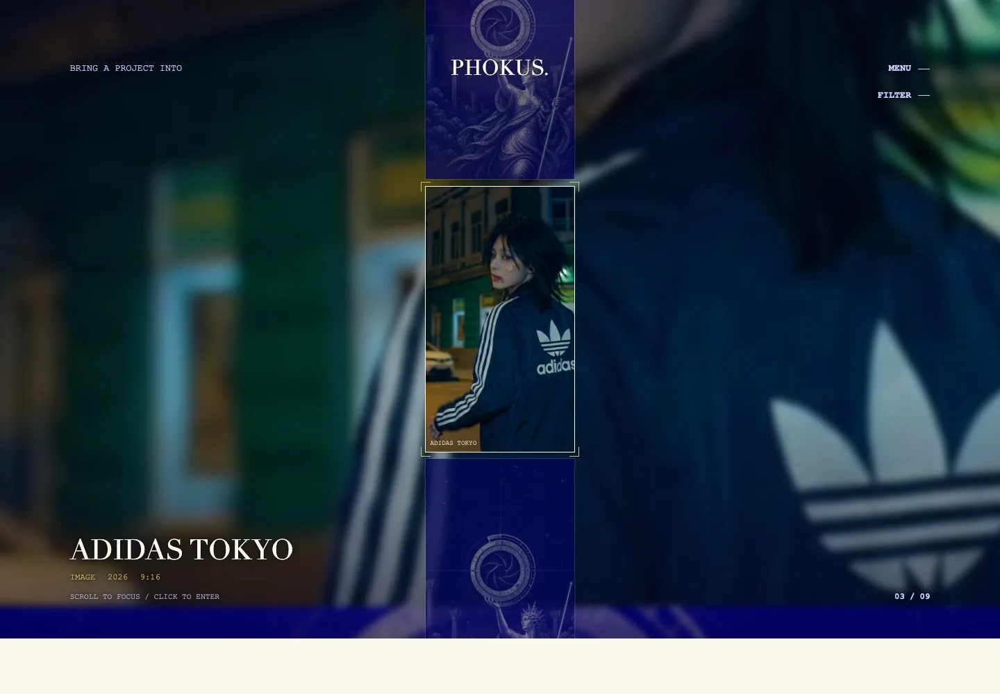
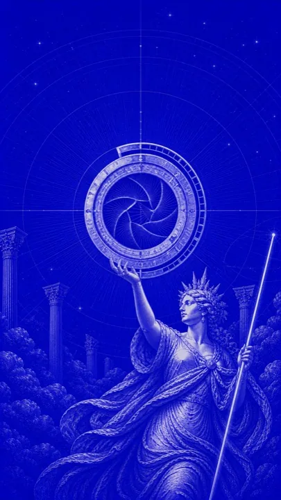
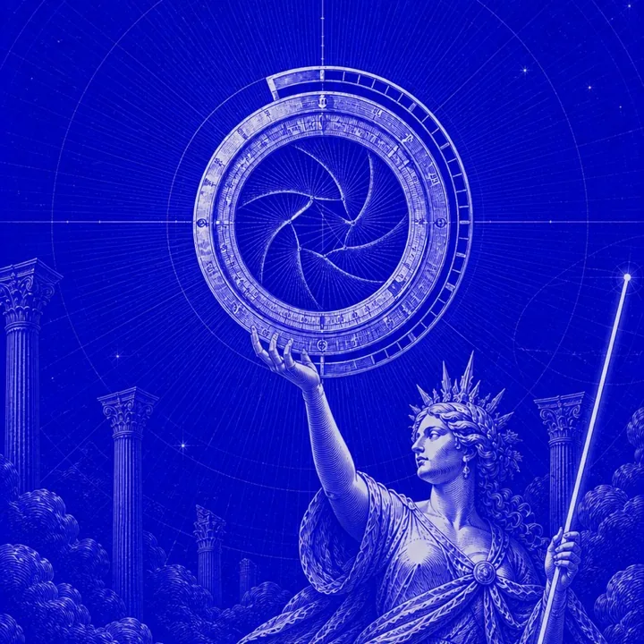

Product / studio site
Phokus
The studio site is the first case in it. It has to argue its own method before it is trusted to argue anyone else’s, so it teaches the rule first and makes the index a viewfinder rather than a grid.
- Year
- 2026
- Kind
- Product
- Role
- Design, front-end, tooling
- Frames
- Responsive, 9:16 focus area
The format problem
An index that focuses instead of listing.
A portfolio grid asks a visitor to compare thumbnails. This one asks them to look at one project at a time, so the index behaves like a viewfinder: whatever sits inside the brackets is the thing about to be entered.


Open the work
Primary sources.
Structure
Two doors, one substrate.
The whole site rests on a single distinction, so it is taught once at the door and never explained again.
-
Act I
The rule
If it has an audience it is Image. If it has a user it is Product. Pipelines are not a third door; they run underneath both.
-
Act II
The focus
One project inside the brackets at a time, with its kind, year, and native frame printed beside it.
-
Act III
The case
Every project opens into the same six blocks, so two campaigns can actually be compared.
The muse
One composition, every frame.
The artwork is a single engraved scene — an astrolabe whose centre is a camera iris, held up out of the clouds past ruined columns. It is re-framed rather than redrawn, which is what lets any project declare a native frame and still sit inside the same world.


Type
Three voices, no webfonts.
Every family is a system stack, so nothing is downloaded and nothing shifts on load. Each does one job and never borrows another’s: titles are set, data is printed, and prose is read. The palette is as tight — electric royal blue, porcelain paper, and gold used only to mark focus.
Didot
Didot, Bodoni 72, Baskerville, Times New Roman, serif
Courier New
Courier New, Courier, ui-monospace, monospace
Inter
Inter, ui-sans-serif, system-ui, -apple-system, Segoe UI, sans-serif
How it was built
Pipeline.
Hand-written and dependency-free, with one small tool so that adding a campaign never becomes copy-paste work.
Plain HTML, one stylesheet, one script. No framework, no bundler, nothing to run before deploying.
Three type families, three colours, and a set of section bands reused across every page.
PHOKUS pulls a campaign out of Notion, converts its stills, and scaffolds the case page once.
Generated pages are edited by hand afterwards, so the tool never turns into a dependency.